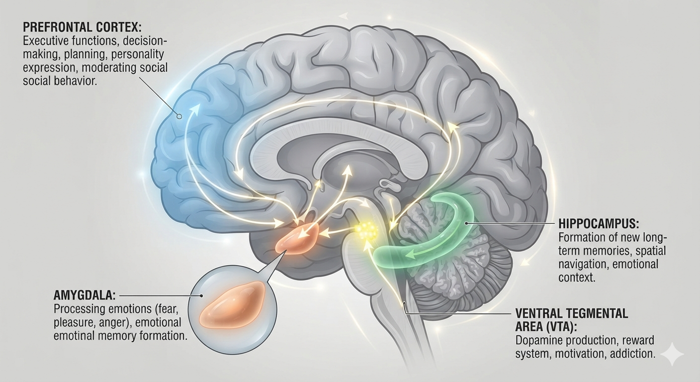
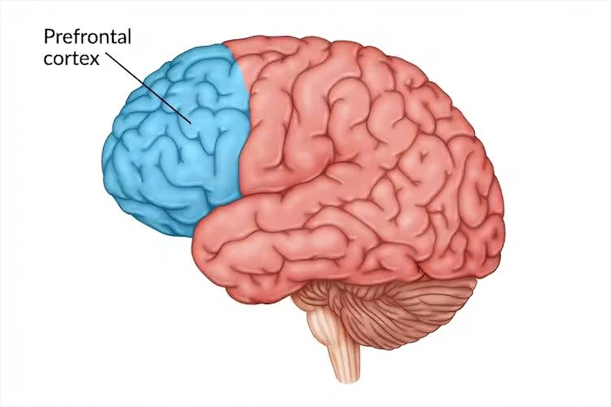
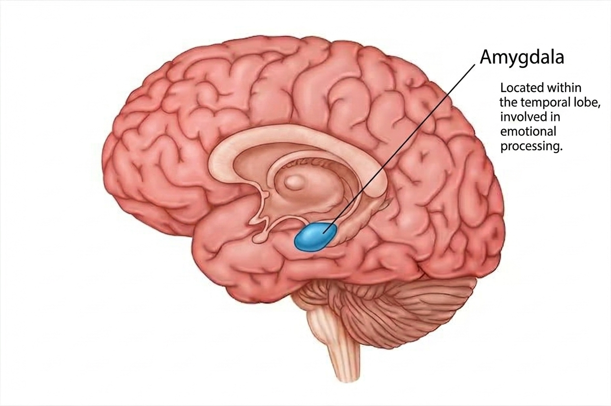
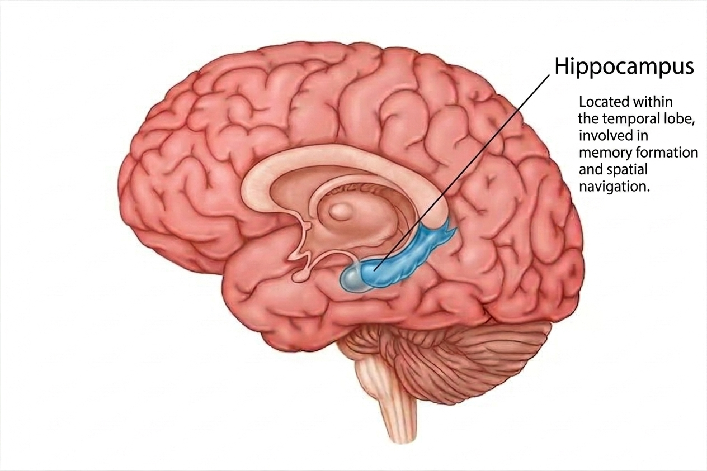
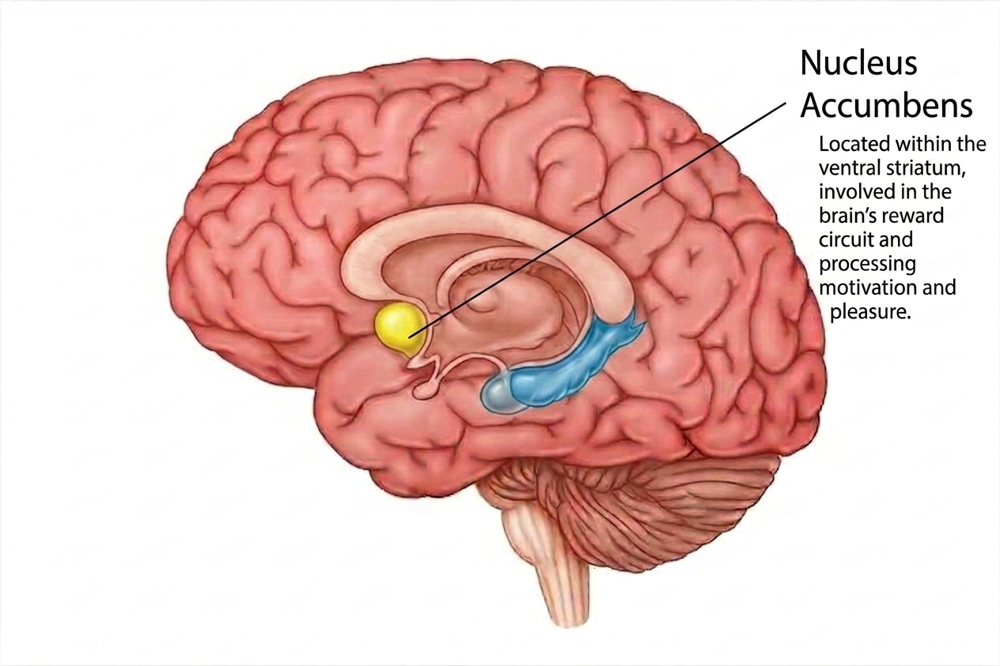

The brain is a pretty vital organ and it serves as the command center for the entire body.
It has a mass of about 3 pounds and consists mostly of fats.

Parts of the brain

Last part of the brain to develop. It usually becomes fully operation in mid 20s to early 30s.
The prefrontal cortex is rensponsible for reasoning and logical calculations aka the CEO of the brain.

The region of fear, anxiety, uncertanity and social distrust. This part of the brain develop early. It can be enlarged by
chronic stress or trauma.

The harddrive. Primarily known for contextual memory consilidation.

This is the critical anotomical site where raw motivation is translated into physical action.
The NAc serve aas a primary bridge between the limbic system and the motor system.
"Dopamine is more about the anticipation of reward than about the reward itself."
-Robert Salpolsky
Call to action! It's time!
Sign up for more information by clicking the button over there!